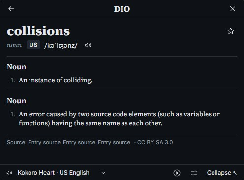

Choose a word
Highlight a word in an app you are reading.
The collisions were difficult to predict.
Select a word and press Ctrl + Alt + D. DIO opens its meaning and pronunciation beside what you are reading, in many Windows apps.
The collisions were difficult to predict.


A shortcut brings the dictionary to your reading. The full entry is there when you need more.
Highlight a word in an app you are reading.
The collisions were difficult to predict.
Press Ctrl + Alt + D to see a plain-English meaning.
Read further definitions, examples and related words when available.
Browsers, PDF readers, terminals and game stores. The popup opens beside the word and closes when you click away.
Double-click a word in an article. DIO tries Windows accessibility first, then copies and restores the clipboard if needed.
Look up words in Adobe Acrobat and other PDF readers. A comma or quote mark picked up with the word is left out.
Look up jargon in Windows Terminal. DIO copies with Ctrl + Insert, so the running program is never interrupted.
Read a store page in Steam and check a word without leaving it. Your previous clipboard comes back after every lookup.


From Simple English Wiktionary first. Expand adds the fuller list.
IPA labelled with its source, and a speaker to hear it.
32,000 meanings for abbreviations like TTL and DPI.
Star a word to keep it in your vocabulary list.

DIO speaks with Kokoro, an open voice model. Install it once from Settings, about 95 MB, and it works offline.
Click the speaker beside its pronunciation. DIO uses an available recording or the installed Kokoro voice.
Select up to 2,000 characters and press Ctrl + Alt + R. Press it again to stop.
Once installed, Kokoro makes speech on your CPU. The text you read aloud stays on your computer.
 Ctrl + Alt + R
Ctrl + Alt + R
No account. No admin rights. DIO starts in the system tray.
Get DIO-setup.exe, 31 MB, for 64-bit Windows 10 or 11.
Open the downloaded file and follow the installer prompts.
Highlight a word and press Ctrl + Alt + D. Press Escape or click away to close it.
DIO is not code-signed yet. If Windows SmartScreen warns you, choose More info, then Run anyway.
Yes. 152,000 English words and the acronym list are built in. Online sources add simpler definitions when you are connected.
Only the word you look up, to Simple English Wiktionary and the Free Dictionary API. Text read aloud never leaves your computer.
Apps running as administrator, games, remote desktop windows and the classic console can block it.
Open Settings, then Apps, then Installed apps, and uninstall DIO.